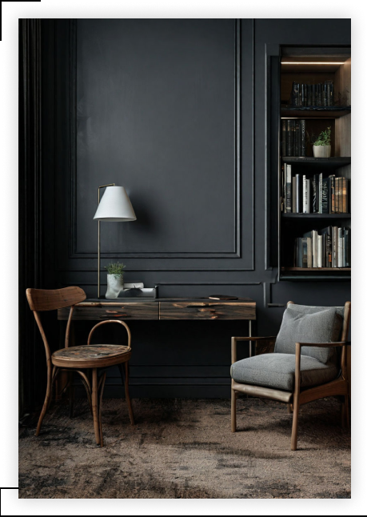
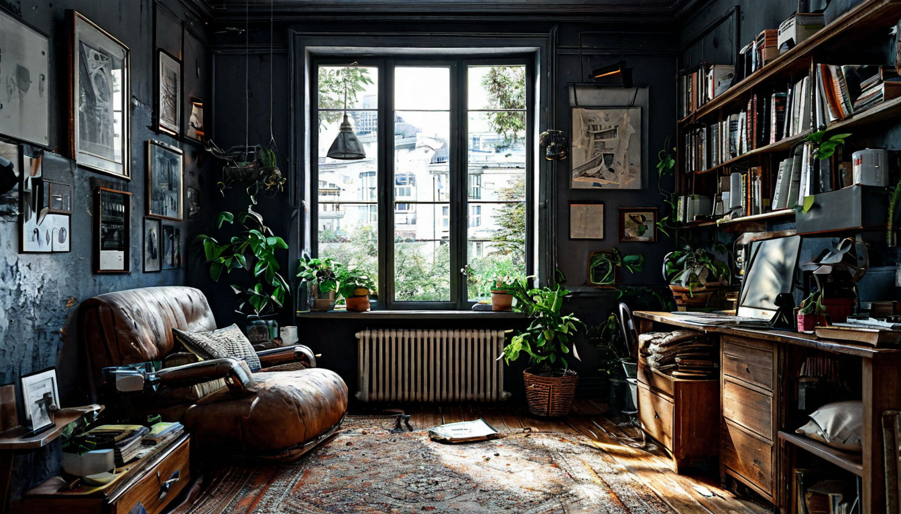

Популярные статьи
Декорирование интерьера: основные принципы украшения
пространства

Декорирование интерьера является финальным аккордом дизайна. Правильно
подобранные украшения для дома придают ему жилой вид и наполняют
уютом. При этом именно милые детали вроде картины на стене, цветка на
подоконнике или фигурки между баночками со специями на открытом
стеллаже становятся теми яркими деталями, которые делают
оформление уникальным. При самостоятельном декорировании интерьера
нужно знать базовые правила, которые помогут вам создать по-
настоящему гармоничный и приятный для глаз дизайн. В этой статье мы
поделимся 10 секретами идеального декора от дизайнеров.
- Соблюдайте ритм
Ритм — это художественный прием, который задает направлению взгляду
при просмотре картин и рисунков. Также его можно применить к
декорированию интерьера квартиры. Его суть заключается в том, что
каждый предмет декора должен сочетаться с чем-нибудь в комнате по
цвету или фактуре. Например, подбирая бирюзовые подушки на диван,
повесьте над ним картину с изображением лазурного моря или поставьте
где-нибудь рядом голубую вазу. Желательно, чтобы количество таких
акцентов было нечетным.
- Сдержанность в цветах
Правильный подбор цветовой гаммы — это основа декорирования интерьера. Используйте для оформления помещения не
более 2-3 цветов и их оттенков, чтобы не перегрузить пространство. При этом не забывайте про контрасты, потому
что полностью монохромное помещение выглядит скучно. Чтобы добавить ему глубины, подберите контрастный декор.
Например, оживить комнату в светлой гамме поможет яркий текстиль или несколько черных предметов декора —
подсвечников, ваз, светильников и т. д
Рецепты загромождения и беспорядка: что заставляет ваш
дом выглядеть неухоженным и неуютным

Вы знаете, как это бывает. Кажется, самый обычный дом. Бюджетные решения, ничто не кричит о богатстве и достатке
хозяев. Но всё разложено по местам, сверкает чистотой, удачно подобраны и цвет, и акценты. Ловишь себя на ощущении, что
не хочется уходить.
Бывает и другое. Хаос, запустение, нагромождение. Или откровенный бардак – назовем вещи своими именами. Вроде не
экономили на мебели, материалах, элементах отделки – а вот всё вместе не смотрится. Отчасти потому, что нет
хозяйского глаза и присмотра. Да и со вкусом явные проблемы.
Давайте пойдем от противного. Посмотрим, что именно заставляет пространство выглядеть запущенным и неухоженным.
Подумаем, что с этим можно сделать.
- Кухонный беспорядок. Это современные реалии: гостей, зашедших «на минутку», как правило, приглашают на кухню.
Кухня давно из утилитарного превратилась в подлинно универсальное пространство. По кухне же можно судить о том, как
люди организовали и ведут свое хозяйство. Неубранный обеденный стол, жирные потеки на столешнице, плита и духовой
шкаф, давно не видевшие уборки. Хрестоматийный пример – раковина, полная грязной посуды, или крошки на полу.
Удивительно, но факт: кухню легко запустить, но так же легко и привести в порядок. Перемыть, расставить по местам,
вовремя запускать посудомойку, держать в чистоте столешницы. Совет на все времена: при любой усталости не
ложитесь спать, не наведя порядок на кухне. Бог с ними, с гостями. Когда в условиях утреннего цейтнота приходится
отыскивать чистую кружку и ложку – это уже не есть правильно.
- Неубранные кровати и беспорядок на диване. В спальню, как правило, гостей не допускают. Но мы сейчас не о гостях, а об
уюте в своем собственном пространстве. Пройдите экспресс-тест, ответьте на вопрос. В какую кровать вы нырнули бы
с большим удовольствием – аккуратную, заправленную или небрежно скомканную? В зависимости от ответа и исходите.
А навести порядок на диване в гостиной – красиво уложить плед, взбить подушки, заодно прибрать на журнальном
столике, минутное же дело. Зато результат заметен сразу.
- Визуальный беспорядок. Главным образом он состоит из предметов и вещей, не имеющих своего постоянного места для
хранения. Или просто из наиболее востребованных вещей, которые никто не считает нужным убрать по окончании
пользования. Другой вариант: такие вещи не убирают, а элементарно «пристраивают». Отыскивают свободное местечко
на любой горизонтальной поверхности – на полке, подоконнике, столике и даже кресле. Положили и забыли. Захламили
одно место, приступили к другому. Здравствуй, бардак! Рецепт простой: уборка и расхламление. Первым делом
избавляйтесь от визуального беспорядка и от всего, что его составляет. Определите для каждой вещи свое место.
Совет: чем чаще пользуются той или иной вещью, тем легче нужно ее отыскать, взять и без проблем снова убрать. Нет
смысла задвигать такие вещи на задворки. А вот копить хлам не имеет никакого смысла. Читайте статьи на нашем
канале, посвященные расхламлению!
- Открытые стеллажи. Ни капли не возражаем против стеллажей как предмета мебели. Совсем наоборот: просто,
минималистично, наконец, удобно и красиво. С одной важной ремаркой – стеллажи нельзя загромождать сверх всякой
меры. Всё должно выглядеть рационально и аккуратно. Если полки стеллажей используются для хранения журналов и
газет, с полок неделями не стирается пыль – вот вам еще одна составляющая хаоса и бардака. Вам претит регулярная,
методичная уборка – не останавливайте свой выбор на открытых стеллажах. Есть и другой выход: легкая ежедневная
уборка на 15-20 минут. Когда порядок однажды заведен, и он просто поддерживается. Просто и технологично.